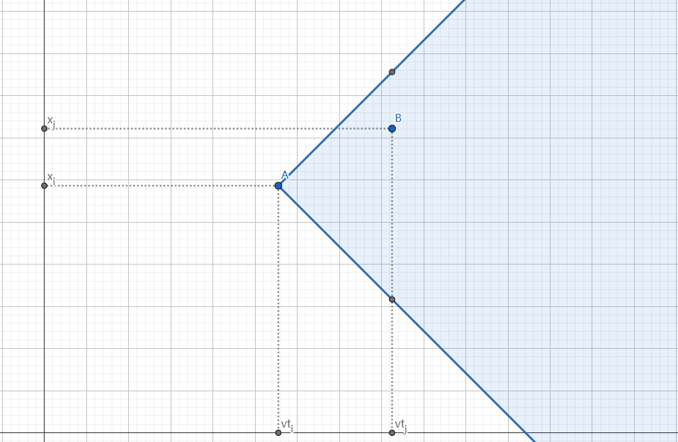

CF1662L Il Derby della Madonnina
题目描述
有 $n$ 个点，第 $i$ 个点在 $t_i$ 时出现在 $a_i$ 位置然后消失。你第 $0$ 秒时在位置 $0$，速度为 $v$，问最多能赶上多少个点出现。
思路
设 $dp_i$ 表示到了第 $i$ 个点，且能赶上点 $i$ 的时候，最多能赶上多少点，
则 $dp_j = \max_{i=0}^{j-1}{ dp_i \space [v \cdot (t_j-t_i) \ge \lvert x_j-x_i \rvert ]}+1$。
当 $i<j$ 有 $t_i < t_j$，所以 $v \cdot (t_j-t_i) = \lvert v \cdot t_j - v \cdot t_i \rvert$，
可以把限制条件看作点 $A \space (v \cdot t_i,x_i)$ 与点 $B \space (v \cdot t_j,x_j)$ 两点的切比雪夫距离为其横坐标的距离，且 $B$ 在 $A$ 右侧。画出来图像这样，蓝色区域是 $B$ 点的限制区域。

我们发现，$B$ 点的范围是个边缘与坐标轴夹 $\frac {\pi}{4} $ 的半平面交，这个边缘不与坐标轴垂直很烦，所以我们将坐标系顺时针旋转 $\frac {\pi}{4} $。

原坐标系 $(x,y)$ 对应新坐标系 $(x\cos(- \frac {\pi}{4} )+y\sin(- \frac {\pi}{4} ),y\cos(- \frac {\pi}{4} ) - x\sin(- \frac {\pi}{4} ))$。
我们实际只在乎两点间的相对位置，将坐标轴整体扩大 $\cos(- \frac {\pi}{4} )$ 后不会对限制产生影响。
现在原坐标系的点 $(x,y)$ 对应新坐标系的 $(x-y,x+y)$。
新坐标系下，$B$ 的限制变为了需在 $A$ 的右上部分。
不难发现，原问题变为了求平面最长不下降链，起始点强制为 $(0,0)$，二维偏序即可。
代码
1 |
|